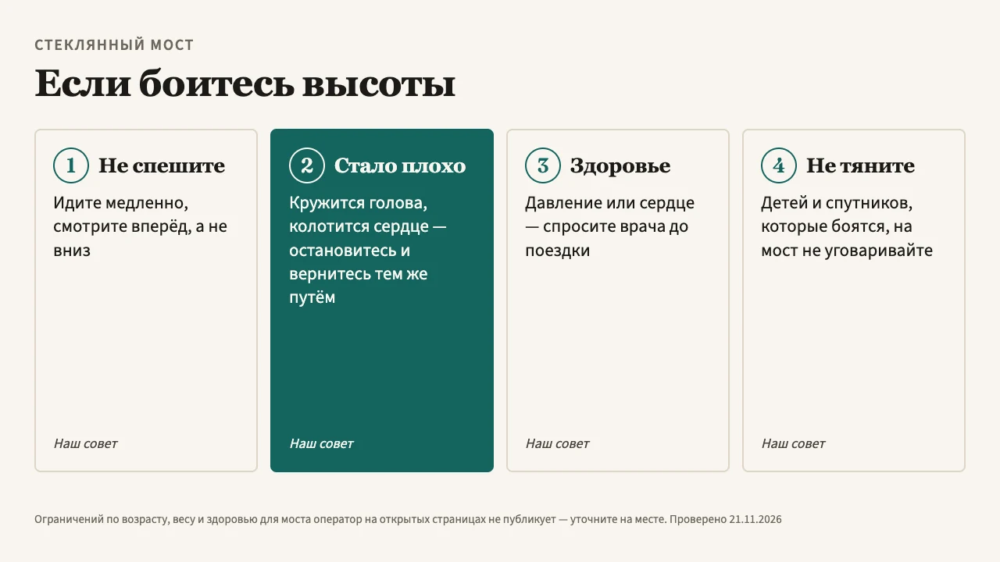
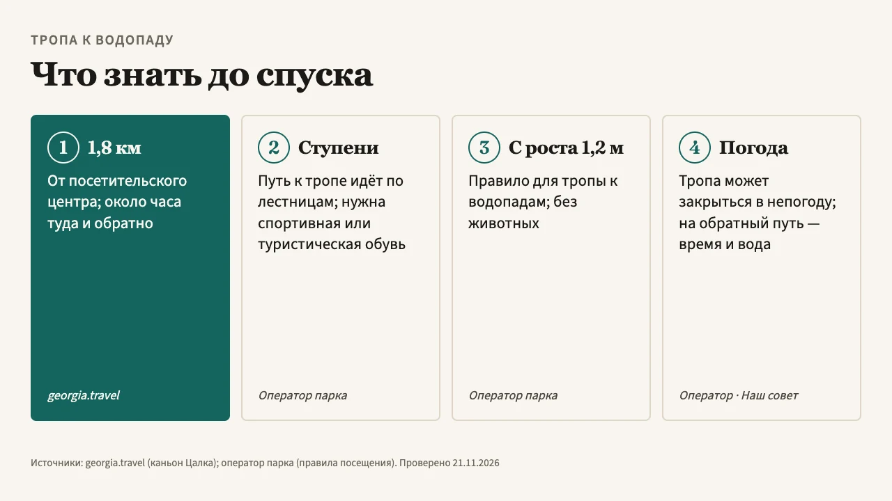
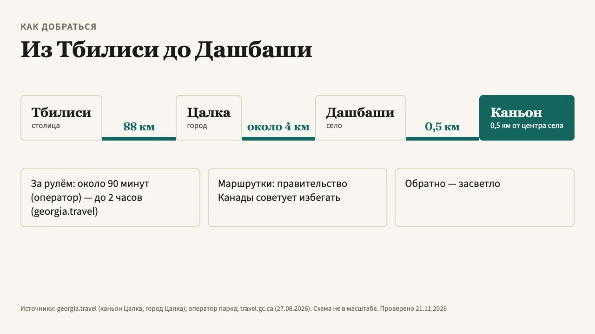
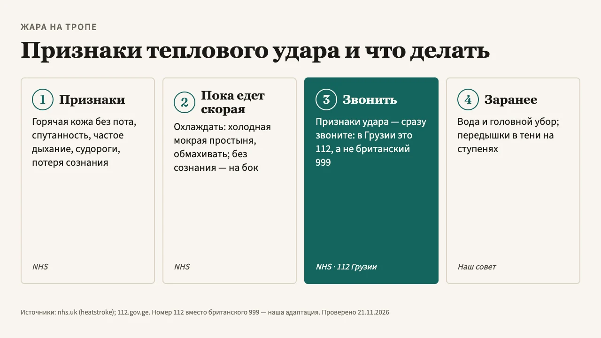
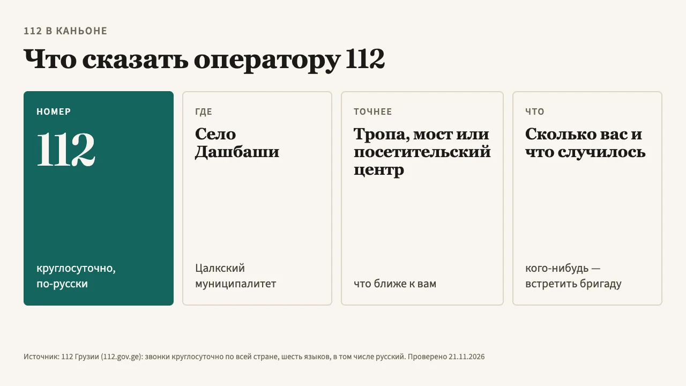

- Мост
- 240 м
- Тропа
- 1,8 км
- Туда и обратно
- около 1 часа
- От Тбилиси до Цалки
- 88 км
- Закон о памятнике
- 2013 год
- Скорая и полиция
- 112
Что такое Дашбаши и что здесь посмотреть
Это ущелье у одноимённого села. Статус природного памятника ему дал Закон Грузии «О создании и управлении памятниками природы» 2013 года: принят 20 ноября, действует с публикации 3 декабря. Среди достопримечательностей — мост из стекла над ущельем и тропа к водопаду.

Администрация туризма помещает каньон в Алгетский национальный парк, а Закон выделяет его как отдельный памятник природы. Как соотносятся эти статусы, источники не поясняют.
Высоту над уровнем моря источники дают по-разному: администрация туризма — 1 200–1 500 м, Агентство охраняемых территорий — 1 110–1 448 м.
Если ищете другой каньон, на западе Грузии есть Каньон Мартвили: тропа и лодка.
Часы работы и цены: что известно
По сайту оператора каньона (проверено 21 ноября 2026 года), парк открыт ежедневно с 10:00 до 18:00. Для дневного визита бронировать заранее не нужно; сезонных изменений страница не показывает.
Цен там нет, а суммы в интернете расходятся, поэтому мы их не приводим. Часть аттракционов оплачивается отдельно, например Cliff Swing и Sky Bikes; суммы не названы. Условия входа для дневного визита на страницах парка не описаны — уточните у входа.
Наш совет: часы и цены уточните на сайте парка в день поездки.
Стеклянный мост Дашбаши (Бриллиантовый мост)
Стеклянный мост в Грузии, о котором пишут как о Бриллиантовом, находится в каньоне у села Дашбаши, а не в Тбилиси. Его длина — 240 м: эту цифру дают и оператор, и администрация туризма.

В заголовке страницы администрации туризма он назван Diamond Glass Bridge — по-русски «алмазный мост».
Не путайте его с Мостом Мира — это другое сооружение в другом городе. О нём — в статье Тбилиси: Мост Мира и парк Рике.
Высоту над дном наши источники не называют, а цифры в интернете расходятся — мы их не приводим. Возрастных, весовых и медицинских ограничений для моста на открытых страницах оператора нет. «Не указано» не значит «ограничений нет»: спросите у входа.
Боитесь высоты: как пройти по стеклянному полу
Правил о страхе высоты и о ветре на переходе мы не нашли ни у оператора, ни в других источниках. Решать придётся на месте, поэтому ниже — наш совет, а не официальная рекомендация.
Наш совет:
- идите не торопясь и смотрите вперёд, а не вниз;
- закружилась голова, сильно бьётся сердце, накатила паника — остановитесь, отдышитесь и вернитесь тем же путём;
- не уговаривайте детей и спутников, которые боятся;
- при повышенном давлении или болезнях сердца спросите врача до поездки;
- обморок или сильная боль в груди — сразу вызывайте скорую (как это сделать — ниже).

Тропа к водопаду: ступени, обувь и когда закрывают
У посетительского центра каньона начинается тропа длиной 1,8 километра; путь туда и обратно занимает около часа.
Оператор предупреждает: путь к ней идёт по ступеням, в непогоду маршрут могут закрыть. Он советует спортивную или туристическую обувь и просит не брать с собой животных. Правило «рост от 1,2 м» указано для тропы к водопадам; для перехода из стекла и аттракционов оно не названо.
Официальной оценки сложности, перепада высот и времени на подъём назад мы не нашли.
Наш совет: на обратный путь заложите больше времени — вверх идти дольше. Возьмите воду и делайте паузы. Подвернули ногу или стёрли ступню — смотрите растяжения и мозоли: что делать.

Можно ли с детьми и кому нужна осторожность
На этот маршрут пускают с роста 1,2 м. Для перехода из стекла и аттракционов ограничений на сайте парка нет — уточните у входа.
Наш совет: на ступенях держите детей за руку, коляску не берите. Пожилым и тем, у кого болит сердце или скачет давление, стоит спросить врача до поездки и не спускаться, если пугает подъём назад.
Как добраться из Тбилиси: расстояние, время и маршрутка
Из Тбилиси до Дашбаши — 88 км до Цалки и ещё четыре километра до села; от центра села до ущелья — полкилометра. Оператор называет около 90 минут за рулём, администрация туризма на странице города — 2 часа.

Агентство охраняемых территорий и другие описания приводят иные расстояние и время; мы берём цифры администрации туризма и парка. Парк предлагает трансферы с сопровождением и частный транспорт; парковка — на месте.
Маршрутка или машина: что пишут правительства о дорогах
Официального расписания и тарифов маршруток на этом направлении мы не нашли. Время и цену уточняйте у водителя в день поездки.
Правительство Канады пишет, что маршрутки «плохо обслуживаются и часто не имеют средств безопасности, например ремней» (перевод наш), и советует их избегать. Правительство Великобритании (GOV.UK, FCDO) предупреждает: дороги за пределами центров городов часто плохо освещены и в плохом состоянии.
Подробнее — безопасны ли маршрутки и дороги: ночь, скот, горы и зима.
Наш совет: выезжайте обратно засветло и пристёгивайтесь, если ремень есть. Ищете ещё направления — вот куда съездить из Тбилиси на день.
Дашбаши зимой: лёд на ступенях, замёрзший водопад и дорога
В холода водопад замерзает — администрация туризма называет это «впечатляющим природным зрелищем». Оператор предупреждает, что в непогоду тропа может закрыться.

Летом в этих местах в среднем +16, зимой температура опускается до −6. Сезонных часов на странице парка нет — уточните их перед поездкой. Данных об обледенении спуска мы не нашли.
Наш совет: на зимний сезон берите обувь с рифлёной подошвой. Если ступени обледенели, не спускайтесь; маршрут закрыт — подождите или вернитесь.
Про дорогу правительство Канады пишет, что в горах зимой нужны зимние шины или цепи, а сельские дороги скользкие. GOV.UK добавляет: сильный дождь, наводнения и снег в высокогорье могут затруднить проезд по дорогам и мостам или сделать его невозможным. Как беречься от холода — переохлаждение: что делать на холоде.
Жара и солнце: как не получить тепловой удар в ущелье
Данных о жаре именно в ущелье мы не нашли: в источниках есть только средняя летняя температура +16. О тени на маршруте в них тоже ничего нет, и это не повод считать риск нулевым.
Британская служба здравоохранения NHS советует держаться в тени, когда солнце сильнее всего, наносить крем с защитой не ниже SPF 30 и закрывать кожу одеждой и солнцезащитными очками. Всемирная организация здравоохранения (ВОЗ) советует в жару присматривать за уязвимыми: людьми старше 65 лет и теми, у кого болезни сердца, лёгких или почек. Подробнее — чем истощение от жары отличается от удара.
Тепловой удар: признаки и что делать до приезда скорой
Тепловой удар — неотложное состояние: так пишут и NHS, и ВОЗ. При его признаках сразу вызывайте скорую.
- очень высокая температура;
- горячая кожа без пота, иногда красная;
- частое дыхание и сердцебиение;
- спутанность и беспокойство;
- судороги или потеря сознания.
Тепловое истощение легче: усталость, головокружение, головная боль, тошнота, сильный пот, бледная липкая кожа, судороги в руках и ногах, сильная жажда. При нём NHS советует перевести человека в прохладу и дать много воды. Если за 30 минут отдыха, охлаждения и питья ему не стало лучше — вызывайте скорую.
При признаках удара, пока едет бригада, оберните человека прохладной мокрой простынёй, обмахивайте или оботрите холодной водой. Потерял сознание — уложите его на бок и проверьте дыхание и пульс; признаков жизни нет — начинайте сердечно-лёгочную реанимацию.
NHS пишет «звоните 999» — это британский номер; в Грузии звоните 112.
Наш совет: вода на каждого, головной убор, детей на солнце не оставляйте; закружилась голова — сразу в тень.

Если нужна помощь: 112 и врач
В экстренном случае звоните 112 и просите скорую — так советует GOV.UK. За пределами столицы медицинская помощь ограничена. В сельской местности, по словам правительства Канады, не хватает лекарств и персонала, а бригады могут не добраться. Это не значит, что помощи нет, — это значит, что номер нужно знать заранее.
112 по-русски: что сказать оператору
Единый номер экстренных служб работает с 2012 года, круглосуточно и по всей стране. Звонки принимают на грузинском, английском, азербайджанском, армянском, турецком и русском. Русского интерфейса у сайта службы нет, но для россиян и других русскоязычных туристов это не помеха: по-русски говорят сами операторы.
Наш совет: сначала назовите место — «около села Дашбаши, Цалкский муниципалитет». Затем скажите, где вы: на тропе, на мосту или у посетительского центра, сколько человек и что случилось. Если рядом есть спутник, попросите его встретить бригаду у посетительского центра. Порядок звонка — как вызвать скорую.

Где ближайший врач и нужна ли страховка
Перечня больниц и поликлиник муниципалитета мы не нашли: на сайте мэрии его нет. Список медучреждений GOV.UK от 16 октября 2026 года включает клиники только столицы и Батуми. Поэтому мы не называем ни клиник, ни расстояния до них; в экстренном случае, куда везти, решает бригада скорой.
Если помощь нужна не срочно, откройте каталог врачей и клиник Тбилиси.
GOV.UK советует иметь страховку, которая покрывает лечение на месте и неожиданную медицинскую эвакуацию. Подробнее — страховка для въезда.
Частые вопросы
Сколько километров от Тбилиси до Дашбаши и сколько ехать?
Сколько стоит вход?
Когда работает и открыт ли зимой?
Тяжело ли идти к водопаду и можно ли с детьми?
Какой номер скорой и говорят ли там по-русски?
Источники
- Законодательный вестник Грузии: Закон Грузии «О создании и управлении памятниками природы» № 1582-რს от 20 ноября 2013 года (на грузинском) ↑
- Национальная администрация туризма Грузии: Tsalka (Dashbashi) Canyon (на английском, открыто 21 ноября 2026 года) ↑
- Агентство охраняемых территорий: Algeti National Park (Tsalka Canyon) (на английском) ↑
- Оператор парка (kassland.com): plan your visit (на английском, проверено 21 ноября 2026 года) ↑
- Оператор парка (kassland.com): главная страница (на английском, проверено 21 ноября 2026 года) ↑
- Национальная администрация туризма Грузии: Tsalka (на английском; время в пути) ↑
- Правительство Канады: рекомендации для путешественников, Грузия, обновлено 27 августа 2026 года (на английском) ↑
- Правительство Великобритании (GOV.UK): безопасность в поездке в Грузию (на английском) ↑
- Правительство Великобритании (GOV.UK): здоровье в поездке в Грузию (на английском) ↑
- Правительство Великобритании (GOV.UK): список медицинских учреждений в Грузии, 16 октября 2026 года (на английском) ↑
- Мэрия Цалки (на грузинском и английском) ↑
- NHS: тепловое истощение и тепловой удар (на английском) ↑
- NHS: солнцезащитный крем и защита от солнца (на английском) ↑
- ВОЗ: изменение климата, жара и здоровье (на английском) ↑
- Центр 112: языки и работа службы (на английском) ↑
Это справочная информация, а не медицинская консультация: лечение назначает врач. Проверено 21 ноября 2026 года.